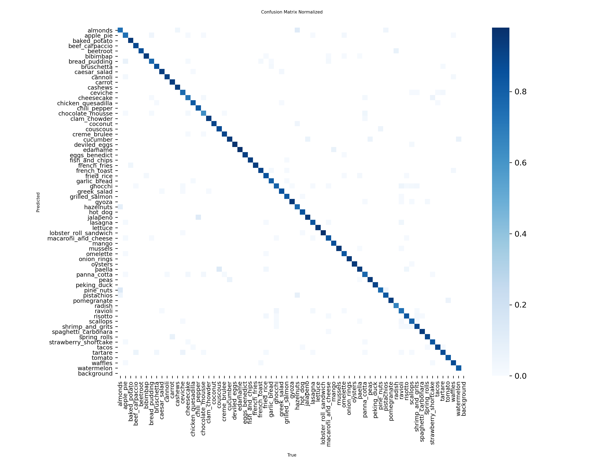
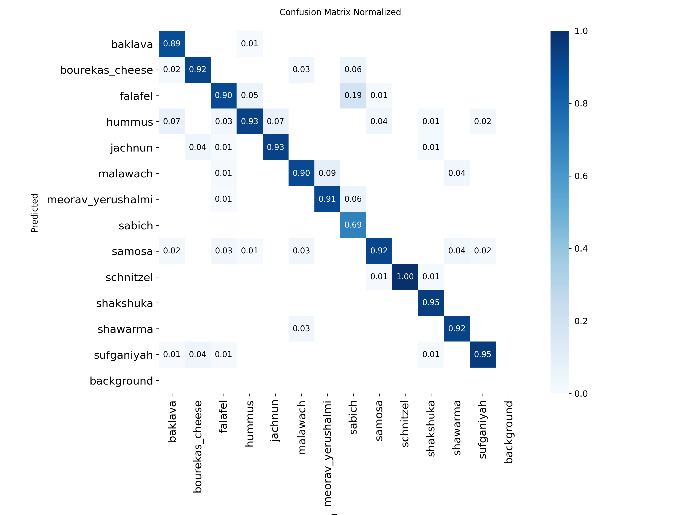
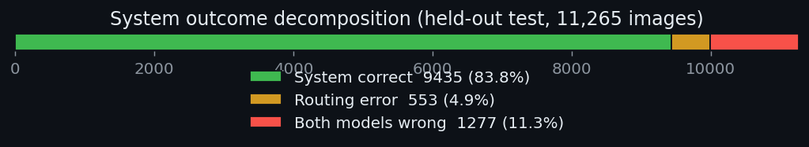
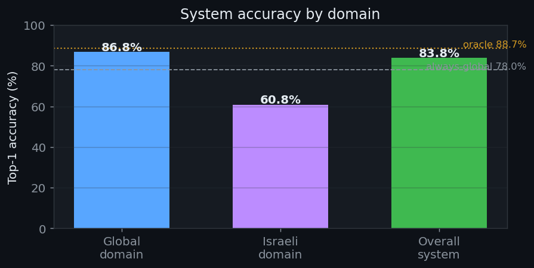
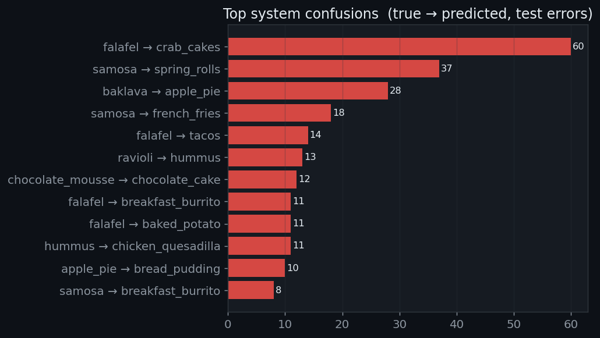
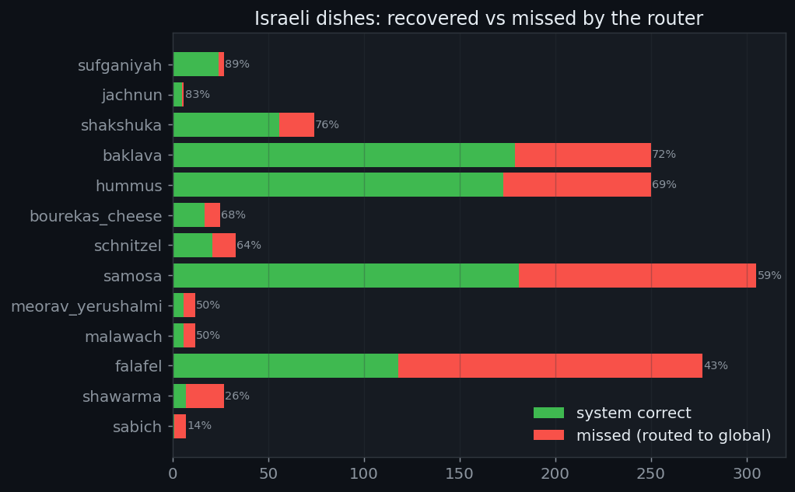
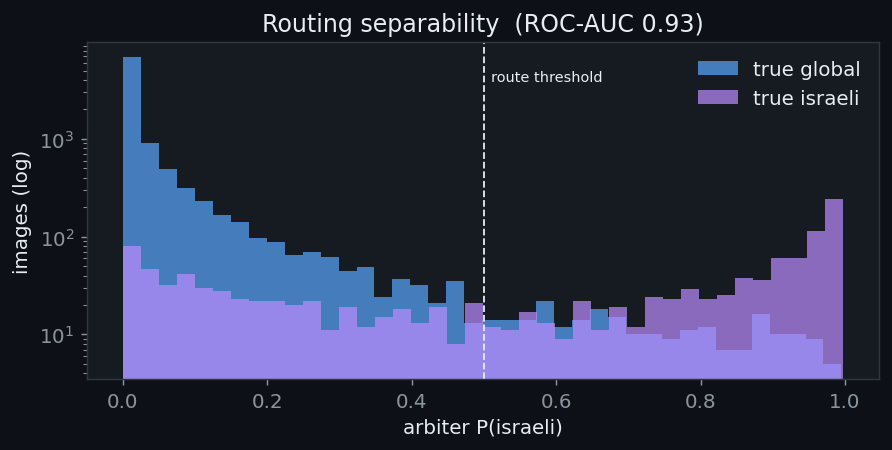
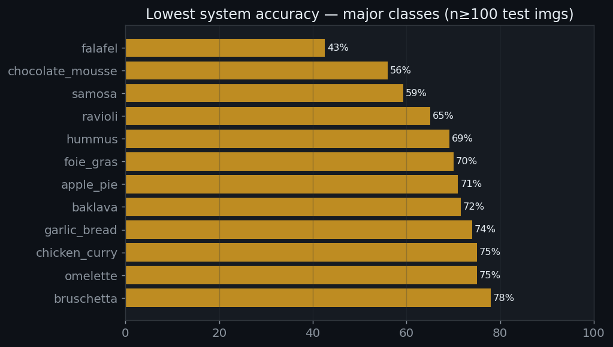

Overview
CalEyeZ removes the friction from nutrition tracking. The user places food on a scale and takes one photo; the system returns calories and a macronutrient breakdown automatically. It solves two independent engineering problems and proves each one with data.
The two questions
| Question | Engineering problem | Solution (proven) |
|---|---|---|
| What is it? | Identify the food, including local Israeli dishes that international models never saw, without the catastrophic forgetting that ruined a single combined model. | A Global expert (132 classes) and an Israeli expert (13 classes), combined by a learned XGBoost arbiter. See Arbiter. |
| How much? | Obtain an accurate mass from a single photo. | Read the mass directly from a reverse-engineered BLE scale, after five vision based volume methods were measured and rejected. See Validation. |
Pitch, audience, goals
- Pitch: point a camera at a plate, get its nutrition. No manual logging, no barcode, no portion guessing.
- Target audience: people managing intake for health reasons (diabetes, fitness, clinical diet) who abandon manual calorie apps because logging is tedious and portion estimates are wrong.
- Primary goal: end-to-end food recognition above the 80% FRS requirement, on a strictly held-out, leakage-free test set. Met at 83.75% (system) and 88.18% (Global model alone).
- Secondary goal: accurate weight without asking the user to type anything. Met by BLE.
Run-time architecture
Edge desktop application in Python with a CustomTkinter GUI. Inference runs locally on an NVIDIA GPU; only the nutrient lookup uses the network.
Key project risks (tracked)
| Risk | Why it matters | Status |
|---|---|---|
| Catastrophic forgetting when adding local food | One combined model lost accuracy on both old and new classes | controlled by the two-expert split |
| Data leakage inflating accuracy | Duplicate images across splits make the test score a lie | removed by exact + perceptual de-dup |
| Class imbalance hurting rare classes | Ingredient classes have far fewer images than dishes | measured and reported per class |
| Arbiter sending the image to the wrong expert | A wrong decision wastes a correct prediction | 4.91% of images, fully decomposed |
| Weight error from vision volume estimation | Volume to mass fails on density | avoided by direct BLE reading |
The full risk-to-test mapping is in the Validation & Risks tab.
Then vs Now presented in class current
This tab compares exactly what was shown at the review conference against the
rebuilt system. Every "then" number is recomputed from the original results file
FINAL_REPORT_v3_results.csv (16,720 images); every "now" number is from the
current leakage-free evaluation.
Headline comparison
| Metric | Then (class) | Now | Change | Note |
|---|---|---|---|---|
| Full system top-1 | 80.30% | 83.75% | +3.45 | and now on clean data |
| Global model top-1 (own domain) | 84.6% | 88.18% | +3.58 | apples to apples: each model on its own classes (158 then, 132 now). 84.6% is the as-presented figure; recomputed on this CSV it is 82.2% |
| Always-global baseline (full mix) | 76.43% | 77.98% | +1.55 | using only the global model on every image, including Israeli food it scores 0% on |
| Oracle ceiling (best possible arbiter) | 82.97% | 88.40% | +5.43 | headroom the models allow |
| Classes (global) | 158 to 161 | 132 | cleaned | merged, renamed, de-duplicated |
| Israeli expert classes | 8 | 13 | +5 | broader local coverage |
| Router accuracy / ROC-AUC | 78.7% | 93.4% / 0.93 | better | this is the router (XGBoost), not the food model; now reported as ROC-AUC, not raw accuracy |
| Val vs test gap (leakage signal) | about 4 pts | 0.02 pt | closed | 88.16 val vs 88.18 test |
Why the old router barely used the second expert
In the class version the router chose the old model on 95.0% of images (15,877 of 16,720) and the new model only 5.0% of the time. The new expert was contributing only 6.54% correct answers, so the router had almost nothing to gain by switching. In other words it was not really routing, it was defaulting to the larger model. The current arbiter is a genuine decision maker, explained in full in the Arbiter tab.
| Router decision (then) | Count | Share |
|---|---|---|
| Chose OLD model | 15,877 | 95.0% |
| Chose NEW model | 843 | 5.0% |
The current arbiter is trained as an explicit domain detector
(route_to_israeli = (domain == israeli)), reaches Israeli recall of 61% with global
recall 97.6%, and the
Arbiter tab explains exactly which features drive
each decision. It is also why the current component is correctly called an arbiter, not a
router: it adjudicates between two experts that have already run, rather than forwarding by a rule.
What changed structurally
| Area | Then | Now |
|---|---|---|
| Backbone | YOLOv8-cls, imgsz 224 | YOLO11l-cls, imgsz 320 |
| Calibration | asymmetric temperature scaling (T=0.55 / 1.0) to hide probability dilution | not needed; arbiter learns relative confidence directly |
| Data hygiene | no de-dup, leakage between splits | SHA-1 exact + 64-bit dHash perceptual de-dup, verified zero cross-split leaks |
| Reported metric | raw router accuracy | ROC-AUC + per-domain recall + full error decomposition |
Source files: FINAL_REPORT_v3_results.csv (then),
datasets/system_evaluation.csv and arbiter_dataset.csv (now).
Dataset
The global dataset was consolidated from the inconsistent 158-class set into a clean,
leakage-free 132-class label space, then re-split 70/20/10. This is where two of the reviewer's
points are answered directly: class balance and leakage. Pipeline:
scripts/flatten_general_dataset.py.
Where the classes went (158 to 132, fully accounted)
The reduction is not deletion of useful classes. Most removed labels either moved to the Israeli expert or were folded into a class they were visually identical to. Here is every change.
| Operation | Count | Detail | Reason |
|---|---|---|---|
| Moved to Israeli expert | 8 | baklava · bourekas_cheese · falafel · hummus · samosa · schnitzel · shakshuka · shawarma. Pita and plural variants (falafel_pita, shawarma_pita, samosas, bourekas) were merged into the base dish; two very rare dishes (hraime, knafeh) were dropped for too few images. | Local dishes left the global model and became the Israeli expert's job. They are not lost, they are handled by the other model and recovered by the arbiter |
| Merge | 8 | filet_mignon + prime_rib → steak · beef_tartare + tuna_tartare → tartare · frozen_yogurt → ice_cream · dumplings → gyoza · sweetcorn → corn · capsicum → bell_pepper | Classes humans cannot reliably separate in a photo only add confusion and split training data |
| Delete | 8 | baby_back_ribs · pork_chop · pulled_pork_sandwich (pork, out of scope) · paprika (mixed/noisy) · soy_beans (redundant with edamame) · beignets · huevos_rancheros · sweetpotato | Out of scope or unusable; noisy labels lower every other class's accuracy |
| Rename | 5 | potato → baked_potato · chilli_pepper → chili_pepper · jalepeno → jalapeno · raddish → radish · edame → edamame | Casing and spelling collisions created duplicate label folders (still present, just renamed) |
What each model is trained to recognize
The two experts cover disjoint label spaces. The global model knows 132 international foods; the Israeli model knows 13 local dishes. No class appears in both, which is why routing reduces cleanly to a domain decision.
Global model
- almonds
- apple
- apple pie
- avocado
- baked potato
- banana
- beef carpaccio
- beet salad
- beetroot
- bell pepper
- bibimbap
- brazil nuts
- bread pudding
- breakfast burrito
- bruschetta
- cabbage
- caesar salad
- canned tuna
- cannoli
- caprese salad
- carrot
- carrot cake
- cashews
- cauliflower
- ceviche
- cheese plate
- cheesecake
- chicken curry
- chicken quesadilla
- chicken wings
- chili pepper
- chocolate cake
- chocolate mousse
- churros
- clam chowder
- club sandwich
- coconut
- corn
- couscous
- crab cakes
- creme brulee
- croque madame
- cucumber
- cup cakes
- deviled eggs
- donuts
- edamame
- eggplant
- eggs benedict
- escargots
- fish and chips
- foie gras
- french fries
- french onion soup
- french toast
- fried calamari
- fried rice
- garlic
- garlic bread
- ginger
- gnocchi
- grapes
- greek salad
- grilled cheese sandwich
- grilled salmon
- guacamole
- gyoza
- hamburger
- hazelnuts
- hot and sour soup
- hot dog
- ice cream
- jalapeno
- kiwi
- lasagna
- lemon
- lettuce
- lobster bisque
- lobster roll sandwich
- macadamia
- macaroni and cheese
- macarons
- mango
- miso soup
- mussels
- nachos
- omelette
- onion
- onion rings
- orange
- oysters
- pad thai
- paella
- pancakes
- panna cotta
- pear
- peas
- pecans
- peking duck
- pho
- pine nuts
- pineapple
- pistachios
- pizza
- pomegranate
- poutine
- radish
- ramen
- ravioli
- red velvet cake
- risotto
- sashimi
- scallops
- seaweed salad
- shrimp and grits
- spaghetti bolognese
- spaghetti carbonara
- spinach
- spring rolls
- steak
- strawberry shortcake
- sushi
- tacos
- takoyaki
- tartare
- tiramisu
- tomato
- turnip
- waffles
- walnuts
- watermelon
- white rice
Israeli model
- baklava
- bourekas cheese
- falafel
- hummus
- jachnun
- malawach
- meorav yerushalmi
- sabich
- samosa
- schnitzel
- shakshuka
- shawarma
- sufganiyah
De-duplication: how leakage was removed
Two stages run before splitting, so the split unit is a content cluster and never a raw file:
- Exact: SHA-1 hash of file bytes. Byte-identical copies are dropped (981 found).
- Near-duplicate: 64-bit dHash with Hamming distance ≤ 5. Visual twins are clustered and the whole cluster is kept inside a single split.
| Split | Images | Share | Classes |
|---|---|---|---|
| train | 69,491 | 70.0% | 132 |
| val | 19,827 | 20.0% | 132 |
| test | 9,960 | 10.0% | 132 |
| total | 99,307 | 100% | 132 |
Class balance (the reviewer's point)
The classes are not perfectly balanced, and that is reported honestly rather than hidden. Dish classes hold roughly 750 to 1,000 images each; ingredient classes (single fruits, nuts) hold far fewer. The effect is confined to the smallest classes and is a small-sample effect, not a systematic weakness. The training uses class-aware sampling and heavy augmentation to compensate, and per-class recall is reported in the System Analysis tab so the imbalance is visible, not papered over.
Global Model 88.18% clean test
YOLO11l-cls (Ultralytics, ImageNet-1k pretrained, about 13M parameters),
fine-tuned on the 132-class set. Run directory: runs/general_model_flattened/.
Why this model, backed by data
| Decision | Alternatives | Why this one |
|---|---|---|
| YOLO11l-cls backbone | YOLOv8-cls (previous), ResNet-50, EfficientNet | Newer C3k2 backbone gave a higher clean top-1 at the same VRAM budget; classification head is simple to fine-tune and export |
| imgsz 320 (was 224) | 224, 416, 640 | 320 lifted top-1 over 224 while still fitting batch 16 in about 2.2 GB; 640 gave no measurable gain for far more compute |
| Heavy augmentation | light / default aug | Deliberate trade: a moderate-aug retrain scores about 90% on this clean test but is more brittle in the classroom. Robustness was chosen on purpose |
| Two experts, not one | single 145-class model | The single combined model lost accuracy on both old and new classes (catastrophic forgetting). Two experts plus an arbiter avoid it |
Training configuration and why we chose each setting
| Setting | Value | Why this choice |
|---|---|---|
| imgsz | 320 | Food is a fine-texture problem (rice grains, crumbs, sauce sheen). 320 beat the default 224 on top-1 while still fitting batch 16 on an 8 GB GPU; 640 gave no measurable gain for far more compute. |
| batch | 16 | The largest batch that fits comfortably at 320 px with AMP headroom, large enough for stable batch-norm and gradient estimates without gradient accumulation. |
| optimizer | AdamW + cosine LR | AdamW decouples weight decay from the adaptive step, which fine-tunes a pretrained backbone reliably; cosine annealing lowers the LR smoothly to a good minimum with no hand-tuned step schedule. |
| lr0 / lrf | 1e-3 / 0.01 | 1e-3 is the standard AdamW base for fine-tuning an ImageNet-pretrained backbone; lrf 0.01 decays to 1% of that by the end so late epochs refine the weights instead of thrashing them. |
| epochs / patience | 150, patience 30 (stopped 116) | A generous cap so the model is never under-trained, with early stopping so it does not waste compute; patience 30 tolerates the noisy validation plateau before stopping. |
| dropout | 0.2 | Regularises against overfitting the large dish classes (about 1,000 images each) given the heavy class imbalance. |
| label smoothing | 0.1 | Stops the model becoming over-certain on visually ambiguous pairs (mousse vs cake), which improves probability calibration. Better-calibrated confidences directly feed the arbiter's features. |
| AMP (mixed precision) | on (~2.2 GB) | Halves memory and speeds training with no accuracy loss, leaving VRAM headroom on the 8 GB card for the 320 px / batch 16 setup. |
| best epoch | 73 | best.pt is frozen at the validation peak, so the mild overfit that begins after about epoch 60 (train loss down, val loss up) never affects the reported number. |
Training code
# scripts/training/train_general_model.py (essentials) from ultralytics import YOLO model = YOLO("yolo11l-cls.pt") # ImageNet-1k pretrained model.train( data="datasets/general_model_flattened", # 132 classes, 70/20/10 imgsz=320, batch=16, epochs=150, patience=30, optimizer="AdamW", lr0=1e-3, lrf=0.01, cos_lr=True, dropout=0.2, label_smoothing=0.1, augment=True, hsv_h=0.015, hsv_s=0.7, hsv_v=0.4, degrees=10, translate=0.1, scale=0.5, fliplr=0.5, erasing=0.4, project="runs", name="general_model_flattened", ) # validate on the held-out TEST split model.val(data="datasets/general_model_flattened", split="test")
Results (best.pt, epoch 73)
Most-confused class pairs (test)
Every meaningful confusion is a plausible visual overlap, not a failure:
| True → Predicted | Rate |
|---|---|
| chocolate_mousse → chocolate_cake | 12% |
| apple_pie → bread_pudding | 10% |
| gnocchi ↔ ravioli | 7% |
| beef_carpaccio → tartare | 6% |
| lobster_bisque ↔ clam_chowder | 5% |

Israeli Model 91.7% on its domain
YOLO11l-cls, 13 Israeli classes (baklava, bourekas_cheese, falafel, hummus,
jachnun, malawach, meorav_yerushalmi, sabich, samosa, schnitzel, shakshuka, shawarma, sufganiyah).
Run: runs/israeli_food_yolo11l/, imgsz 224.
Why a second, separate expert
The first attempt added Israeli food to the global model and retrained. The combined model got confused: it lost accuracy on both the international classes it already knew and the new local ones. This is catastrophic forgetting, and it was the trigger for the whole arbiter architecture. Keeping the Israeli dishes in their own small expert means the global model never degrades, and the local model can specialise hard on a narrow domain where it reaches about 92% while the global model scores 0% on those same classes.
Training configuration and why we chose each setting
| Setting | Value | Why this choice |
|---|---|---|
| backbone | YOLO11l-cls | The same backbone as the global model so both experts produce comparable confidence and embedding features, which keeps the arbiter's inputs consistent across the two models. |
| classes | 13 | A narrow, curated local-cuisine set. Keeping the domain small lets this expert specialise hard and reach about 92% where the global model scores 0% on the same dishes. |
| imgsz | 224 | Lower than the global model's 320 because the dataset is much smaller; 224 trains fast, avoids overfitting the limited data, and the local dishes are distinguishable at this resolution. |
| epochs | 63 (best 59) | The small dataset converges quickly, so a short schedule is enough; best.pt is frozen at epoch 59 (the validation peak) before the noisy tail. |
| data | datasets/israeli-food-master | A dedicated, hand-collected local-food set, kept separate from the global data so adding local cuisine never degrades the global model (no catastrophic forgetting). |
| best top-1 | 91.70% | Strong on its own domain (top-5 about 99%), which is what makes the two-expert split worthwhile. Its out-of-domain overconfidence is handled by the arbiter, not by this model. |
Results
The accuracy curve is noisier than the global model's because the dataset is much smaller, so each epoch sees fewer images and the validation estimate has higher variance. The trend is still a clean climb to about 92%.
Known behaviour the arbiter must handle

Arbiter acc 93.4%, ROC-AUC 0.93
Why we call it an arbiter, not a router
A router would forward the image to one model based on a fixed rule before seeing any result. Our component does the opposite: it runs both experts first, then weighs their competing evidence (confidence, entropy, margin) and adjudicates which one to trust. That is arbitration, not routing. The distinction matters because the decision is made on the models' actual behaviour for this specific image, not on a prior guess about where the image should go.
What the arbiter is, in one paragraph
The arbiter is not a third food classifier. It never looks at the image. It looks only at
the two experts' output behaviour for that image (their confidences, how spread out their guesses
are, how decisive each one is) and answers a single yes/no question: does this image belong to
the Israeli expert's domain? If yes, the system returns the Israeli model's label; if no, it
returns the global model's label. Formally the target is
route_to_israeli = (domain == israeli). Because the two label spaces do not overlap,
routing reduces cleanly to domain detection.
Features and their formulas
For each expert we summarise its softmax output with four interpretable numbers, then add the differences between the two experts. The differences are the strongest signal.
| Feature | Meaning | Formula |
|---|---|---|
| p1, p2 | Highest and second-highest class probabilities | top-2 of softmax |
| Margin | How decisive the top guess is | p1 − p2 |
| Normalised confidence | Confidence relative to class count (60% across 13 classes is stronger than across 132) | (p1 − 1/K) / (1 − 1/K) |
| Entropy | Spread of the whole distribution; low means decisive | −Σ p_i · log(p_i) |
| Deltas | Difference of each feature between the two experts (the key signal) | feature_israeli − feature_global |
Top features by importance are entropy_gap, conf_gap and
conf_ratio. The arbiter decides on relative confidence between the experts,
not on the Israeli model's raw confidence, which is exactly why it survives that model's
out-of-domain overconfidence.
Why XGBoost, backed by data
A Random Forest looked great on training data but collapsed on held-out data: it memorised. XGBoost gave essentially the same test accuracy with a tiny generalisation gap, so it was chosen.
| Metric | Random Forest | XGBoost (chosen) | Conclusion |
|---|---|---|---|
| Train accuracy | 98.1% | 81.2% | RF overfit badly; XGBoost is stable, so it was selected |
| Test accuracy | 78.6% | 78.7% | |
| Overfit gap | 19.5% | 2.5% |
Those figures are from the earlier router study; the current arbiter keeps XGBoost and reaches routing accuracy 93.4% and ROC-AUC 0.93 on the rebuilt dataset.
Training code
# scripts/arbiter/train_arbiter_xgb.py (essentials) import xgboost as xgb, pandas as pd df = pd.read_csv("datasets/arbiter_dataset.csv") # both models over val+test y = (df.domain == "israeli").astype(int) # route_to_israeli target # features: each model's conf/entropy/margin + interaction deltas X = df[["g_conf1","g_entropy","g_margin", "i_conf1","i_entropy","i_margin", "conf_gap","conf_ratio","entropy_gap","margin_gap"]] train = df.split == "val" # train on val rows test = df.split == "test" # evaluate on test rows clf = xgb.XGBClassifier( n_estimators=400, max_depth=4, learning_rate=0.05, subsample=0.8, colsample_bytree=0.8, scale_pos_weight=0.5, # Israeli minority ~7% eval_metric="auc", early_stopping_rounds=30) clf.fit(X[train], y[train], eval_set=[(X[test], y[test])]) clf.save_model("scripts/arbiter/arbiter_xgb.json")
Results
ROC-AUC in one line: the probability that the arbiter gives a randomly chosen Israeli image a higher P(israeli) than a randomly chosen global image. 1.0 is perfect separation, 0.5 is a coin flip. 0.93 means it ranks the two domains correctly 93% of the time. Recall = the share of each domain it actually catches.
| Routing metric (test) | Value |
|---|---|
| Routing accuracy | 93.40% |
| ROC-AUC | 0.933 |
| Israeli recall | 61.3% |
| Global recall | 97.6% |
| System top-1 (combined test) | Value |
|---|---|
| Always-global baseline | 77.98% |
| Arbiter (routed) | 83.75% |
| Oracle ceiling | 88.66% |
| Arbiter gain | +5.78 pts |
- Why the gain is real: the global model was never trained on Israeli food, so it gets those images wrong every time (0%). The only way to get them right is for the arbiter to send them to the Israeli expert. That is exactly what produces the jump from the always-global baseline (77.98%) to the routed system (83.75%), a gain of +5.78 points.
- How close that is to perfect: a perfect arbiter (oracle) would score 88.40%. The full gap from baseline to perfect is 88.40 − 77.98 = 10.42 points; the arbiter already captured 5.78 of them, so 5.78 ÷ 10.42 = 54% of the available gap is closed.
- Why Israeli recall is only 61%: of all truly-Israeli images, the arbiter sends 61% to the right expert and misses 39%. The miss is caused by the Israeli model firing high confidence even on food it never saw, which makes its confidence a noisy signal. Better model calibration would raise this; more arbiter tuning would not.
scripts/arbiter/arbiter_xgb.json.CNN Visualizer: what the layers do to one image
This is a live, step-by-step view of how a convolutional classifier turns pixels into a class. Pick an input, then press Play. The same logic runs inside the YOLO11 backbone, just with many more filters and layers.
Layer 1 · Convolution (feature extraction)
A small grid of weights (the kernel) slides across the image. At each position it multiplies the overlapping pixels by the weights and sums them. That single number becomes one pixel of the output feature map. Different kernels detect different things: edges, colours, textures.
Layers 2 to N · Stacking and pooling (from edges to concepts)
Early layers find edges and colour blobs. Stacking convolutions and downsampling (pooling) lets later layers combine those into textures, then parts, then whole concepts like "rice grains" or "round red object". Each box below is a feature map at increasing depth and decreasing resolution.
Bottleneck · The latent vector (the image's signature)
After the last conv block the whole image is compressed into one long vector of numbers (1280 in this backbone). Lit cells are features that are strongly active for this image. This vector is the image's fingerprint; two photos of the same dish produce similar vectors.
Classifier · Weights turn the signature into a decision
The final layer holds one weight template per class. It takes the dot product of the latent vector with each class template; the class whose template matches best wins. Softmax then turns the scores into probabilities. These templates are literally "the weights".
System Error Analysis
Every error of the full routed system was decomposed on the held-out test set
(11,265 images). This separates errors a better arbiter could fix from errors no arbiter can fix.
Reproduce with scripts/arbiter/system_analysis.py.
Error decomposition

| Outcome | Images | Share | Meaning |
|---|---|---|---|
| System correct | 9,435 | 83.75% | routed to the right model and it was right |
| Routing error | 553 | 4.91% | a correct model existed, the arbiter chose the other |
| Both models wrong | 1,277 | 11.34% | unfixable by any arbiter, needs better models |
Accuracy by domain
How to read this chart. Each bar is the system's top-1 accuracy on a slice of the test set. "Global domain" = international foods, "Israeli domain" = the 13 local dishes, "Overall system" = everything combined. The two dashed lines are reference levels: the lower one is the always-global baseline (78.0%, what you get without an arbiter) and the upper one is the oracle ceiling (88.7%, a perfect arbiter). The overall bar sitting at 83.8%, between those lines, is the real arbiter's contribution. Israeli is lower (60.8%) because those dishes are the hardest to route.
The numbers behind the bars (test split, 11,265 images)
| Slice | Images | System correct | System acc | Always-global | Oracle |
|---|---|---|---|---|---|
| Global domain | 9,960 | 8,641 | 86.8% | 88.2% | 88.2% |
| Israeli domain | 1,305 | 794 | 60.8% | 0.0% | 92.3% |
| Overall system | 11,265 | 9,435 | 83.8% | 78.0% | 88.7% |
How the math works. Each bar is simply correct images divided by total images for that slice:
Global : 8,641 / 9,960 = 86.8%
Israeli : 794 / 1,305 = 60.8%
Overall : 9,435 / 11,265 = 83.8% (= (8,641 + 794) / (9,960 + 1,305))
Always-global baseline : 8,784 / 11,265 = 78.0% (global model alone on every image;
it scores 0 of 1,305 Israeli images)
Oracle ceiling : 9,988 / 11,265 = 88.7% (= 8,784 global + 1,204 Israeli that
at least one expert got right)
datasets/system_evaluation.csv.

How decisively the arbiter separates the two domains
How to read this chart. For every test image the arbiter outputs one number: P(israeli), its estimated probability that the image belongs to the Israeli expert (0 on the left, 1 on the right). The histogram counts how many images fall at each value, on a log scale. Blue bars are images that are truly global, purple are truly Israeli. A good arbiter pushes blue to the left (low P) and purple to the right (high P). The dashed line at 0.5 is the decision threshold: anything to its right is sent to the Israeli model. The clean separation (blue piled near 0, purple piled near 1) is what a 0.93 ROC-AUC looks like; the small amount of blue and purple that overlap in the middle is exactly the 7% of routing the arbiter cannot get perfectly right.



Case study: the sufganiyah vs donuts confusion, solved
At the previous review this pair was one of the worst failures in the whole system. A sufganiyah (Israeli jam doughnut) and an American donut look almost identical, and the old single-model setup constantly mixed them up. The two-expert split plus a clean visual cue fixed it.
| Class | Then accuracy | Now accuracy | Confusion with the other |
|---|---|---|---|
| sufganiyah | 58.3% | 88.9% | 82 images read as donuts then → only 2 now |
| donuts | 77.3% | 91.3% | improved, only 5 read as sufganiyah now |
Source: old confusion from FINAL_REPORT_v3_results.csv, current from
datasets/system_evaluation.csv (test split). This is a concrete lesson from the prior
tests carried into the final model, exactly the kind of improvement the review asked us to surface.
Where the arbiter still misses
It handles most Israeli dishes well (sufganiyah 89%, jachnun 83%, shakshuka 76%, baklava 72%, hummus 69%) but struggles where a dish strongly resembles a global food: sabich 14%, shawarma 26%, falafel 43%. The dominant single confusion is falafel → crab_cakes (60 images). The limiting factor is visual feature overlap, not the arbiter logic.
Validation Plan and Risk Coverage
Risk → test → evidence
| Risk | Test performed | Evidence / result |
|---|---|---|
| Test accuracy is inflated by data leakage | Recompute val and test top-1 after SHA-1 + perceptual de-dup; compare the two | val 88.16 vs test 88.18 (gap 0.02). Leakage removed |
| Adding local food breaks the global model (catastrophic forgetting) | Compare combined-model accuracy against the two-expert split | Two-expert split keeps global at 88.18% with no degradation |
| The arbiter defaults to one model instead of truly deciding | Count arbiter decisions and measure per-domain recall and ROC-AUC | Israeli recall 61%, global recall 97.6%, ROC-AUC 0.93; +5.78 pts over always-global |
| A wrong food identification goes unnoticed | Per-image error decomposition into routing error vs both-wrong; per-class recall | 4.91% routing / 11.34% both-wrong, every class measured (System Analysis tab) |
| Class imbalance silently hurts rare classes | Per-class recall reported, smallest classes flagged | Effect confined to ingredient classes with n≈8; reported, not hidden |
| Weight from vision volume is unreliable | Volume estimates validated against Archimedes water displacement | Volume to mass fails on density even when volume is right; pivot to BLE |
| Scale reading is fragile (OCR glare) | Compare OCR of the LCD against direct BLE packet decoding | BLE is deterministic and glare-free; selected as final |
Product vs engineering validation
| Type | What was validated | How |
|---|---|---|
| Engineering validation | Each model and the arbiter meet their numeric targets on held-out, leakage-free data | Held-out test split, ROC-AUC, error decomposition, confusion matrices |
| Product validation | The end user gets a correct food name and weight without manual entry | End-to-end run: photo → class → BLE grams → USDA kcal/macros in the GUI |
Weight estimation: approaches measured and rejected
| Approach | Principle | Why rejected |
|---|---|---|
| Coin fiducial + HoughCircles | ₪1 coin (18 mm) detected, pixels to cm scale | Calibrates the 2-D plane only; no object height |
| MiDaS depth | Monocular relative depth integrated to volume | Scale-ambiguous, noisy on small objects, needs a fiducial every shot |
| Shadow geometry | height = L_shadow · tan(α) | Depends on a known light angle; lighting-sensitive |
| Volume → mass | mass = volume · density | Density problem: fluffy and dense foods of equal volume differ greatly |
| OCR of scale display | Read the 7-segment readout | Glare, angle and lighting fragility on the LCD |
| BLE (final) | Read the weight packet at the source | Selected: deterministic, robust, no vision error |
BLE packet format: weight = low_byte + high_byte × 256, verified by a
checksum over bytes 2 to 6. Example: AC 05 00 02 14 00 CE E4 decodes to 532 g.
The full reverse-engineering story is in the BLE Scale tab.
Reverse-Engineering the BLE Scale
The weight is read straight off the scale's Bluetooth Low Energy broadcast, so there is no camera, no OCR, and no vision error in the measurement path. The scale is a generic commercial unit with no public protocol, so we recovered the packet format ourselves. This tab documents how.
Step 1 · Find the device
Using the nRF Connect app on a phone, we scanned for nearby BLE advertisers. The scale shows up only under a generic name, so we identified it by signal strength (RSSI): with the phone held against the scale, the correct device is the one whose RSSI jumps toward 0 dBm while every other advertiser stays weak. Stepping away and watching that one value drop confirmed the match.
The device advertises as SWAN and streams weight on the notify characteristic
0000ffb2-0000-1000-8000-00805f9b34fb. Subscribing to it delivers a fresh 8-byte packet
every time the reading changes.
Step 2 · Make it talk by changing the input
With the notifications logging, we treated the scale as a black box and changed one variable at a time: place a known mass, record the packet; change the mass, record again. The bytes that moved with weight, and the way they moved, revealed the encoding.
| Mass on scale | Notify packet (hex) | Byte that changed | Decoded |
|---|---|---|---|
| 0 g | AC 05 00 00 00 00 .. | baseline | 0 |
| 100 g | AC 05 00 00 64 00 .. | byte 4 = 0x64 | 100 |
| 200 g | AC 05 00 00 C8 00 .. | byte 4 = 0xC8 | 200 |
| 255 g | AC 05 00 00 FF 00 .. | byte 4 maxed (0xFF) | 255 |
| 532 g | AC 05 00 02 14 00 .. | byte 4 rolled over, byte carries the 256s | 532 |
Step 3 · The packet layout we recovered
| Byte | 0 | 1 | 2 | 3 | 4 | 5 | 6 | 7 |
|---|---|---|---|---|---|---|---|---|
| Role | header | len | unit | status + high bits | low byte | high byte | magic | checksum |
| Example | AC | 05 | 00 | 02 | 14 | 00 | CE | E4 |
low = packet[4] # grams 0..255 high = packet[5] | (packet[3] & 0xFE) # 256s; some units pack the carry into the status byte weight = low + high * 256 # little-endian, grams
Worked example for AC 05 00 02 14 00 CE E4: low = 0x14 = 20, high =
0x00 | (0x02 & 0xFE) = 2, weight = 20 + 2 × 256 = 532 g. The byte-3 mask is the subtle part:
on this unit a high-order carry can appear in the status byte rather than byte 5, so we OR them
together (masking off the low status bit) to get the true high byte.
Step 4 · Robust decode in software
A live scale flickers as it settles, and the high byte can momentarily read 0 during a refresh,
which would make a 532 g reading drop to 20 g for one frame. We added a sticky high byte (hold
the last non-zero carry, reset it only when the load genuinely returns to near zero) plus a software
stability gate (a reading is "stable" once the last ten samples vary by no more than 2 g). This is
the actual handler from gui_scale.py:
from bleak import BleakScanner, BleakClient NOTIFY_UUID = "0000ffb2-0000-1000-8000-00805f9b34fb" sticky_high = 0 def on_notify(sender, data): global sticky_high b = list(data) if len(b) < 8: return low = b[4] high = b[5] | (b[3] & 0xFE) if high > 0: sticky_high = high # remember the carry if low < 5 and high == 0: sticky_high = 0 # real return to zero weight = low + max(high, sticky_high) * 256 # ... push to UI, mark STABLE when last 10 samples vary ≤ 2 g async def run(): dev = await BleakScanner.find_device_by_name("SWAN") async with BleakClient(dev) as c: await c.start_notify(NOTIFY_UUID, on_notify)
food_app.py), but it was fragile to glare and viewing angle, and
every vision volume method failed on the volume-to-mass density problem (see the
Validation & Risks tab). BLE removes the
measurement from the vision path entirely. Source: gui_scale.py, used live in
DEMO.py.Live Demo: the End-to-End Application
The demo ties everything together: a webcam frame becomes a food class, a BLE weight,
and a full nutrition breakdown, live. It runs the current Global and Israeli models behind the
XGBoost arbiter, with a Gemini vision fallback for the cases the experts cannot handle. Every design
choice below is made for one goal: a correct result in the room, under any camera and any light, as
often as the score promises. Source: scripts/demo/caleyez_demo.py.
The pipeline per capture
Why it survives any camera and any light
A score measured on a clean test set only transfers to the room if the live input is brought into the same distribution the models expect. Two steps do that.
| Problem in the room | What we do | Why it works |
|---|---|---|
| Every webcam has a different resolution and aspect ratio | Run inference through Ultralytics predict(), which letterboxes internally to the model's imgsz (320 global, 224 Israeli) | The model always sees the exact geometry it trained on, so a 720p and a 4K camera produce the same tensor. We never hand-resize and distort the aspect ratio. |
| Dim, harsh or warm light flattens contrast | CLAHE on the luminance (L) channel, plus test-time averaging of the raw and CLAHE views | CLAHE equalises local contrast while leaving the colour channels untouched, so the dish looks consistent under different light without any hue shift. Averaging two hue-preserving views means no single transform can dominate the decision. |
# inference robustness (scripts/demo/caleyez_demo.py) l = CLAHE(clip=2.0, tiles=8x8).apply(l) # contrast only, hue preserved (no white balance) probs = mean(predict(raw_roi), predict(clahe_roi)) # test-time averaging
Why a fixed center ROI, not automatic plate detection
The earlier demo tried to find the plate with HoughCircles and contour detection. For a
live demo that is the wrong trade.
| Approach | Behaviour | Verdict |
|---|---|---|
| Automatic (HoughCircles / contours) | Depends on a clean round plate, even light and a plain background; fails silently on clutter and returns a wrong crop | Unpredictable on stage |
| Fixed center ROI (chosen) | A drawn "place food here" box; we always crop that square | Deterministic, scale-consistent, no silent failures |
Second stage: tighten to the food (a lesson from live testing)
The fixed box alone was not enough. In testing, a red bell pepper on the scale was repeatedly misread (jachnun, donut, macaroni) even though the model scores 94% on clean pepper images. The cause: the box still contained the dark scale, wood grain and a hand, and that clutter, not the pepper, drove the prediction. The models were trained on tight food crops, so the live input was out of distribution.
The fix is a training-free segmentation step. We estimate the background colour from the ROI border (almost always table or scale), keep the largest region that differs from it, and crop to that blob. The live preview draws this "food" box so the user sees exactly what will be classified. If the detected region is implausible (too small or nearly the whole frame) we keep the full ROI instead of guessing.
# food isolation (scripts/demo/caleyez_demo.py) bg = median(border pixels of the ROI) # the table / scale colour mask = distance(pixel, bg) > threshold # food = what differs from background crop = bounding box of the largest mask blob # fall back to full ROI if implausible
Wiring the real arbiter (not a re-implementation)
The demo computes the same 19 features the arbiter was trained on, in the same order, and loads the exact saved model. Nothing is approximated.
g = expert(global_model, roi, imgsz=320) # top-5 conf, entropy, margin i = expert(israeli_model, roi, imgsz=224) X = [g_conf1..5, g_entropy, g_margin, i_conf1..5, i_entropy, i_margin, conf_gap, conf_ratio, entropy_gap, margin_gap, both_unsure] p_israeli = arbiter.predict_proba(X)[1] # scripts/arbiter/arbiter_xgb.json route_to_israeli = p_israeli >= 0.5
The Gemini fallback: covering the cases no expert can win
About 11% of system errors are images where both experts are wrong (the both-wrong pool from the System Analysis tab). No amount of routing fixes those. The demo detects that situation and asks a cloud vision model instead, which is the honest way to push realized accuracy past the local ceiling on hard inputs.
| Trigger | Condition | Meaning |
|---|---|---|
| Weak chosen expert | chosen top-1 below its gate (0.45 global, 0.60 Israeli) | The selected model is not confident enough to trust |
| Both experts unsure | both top-1 below 0.50 (both_unsure) | The input is likely out of both label spaces |
The two gates differ on purpose: the Global model spreads probability over 132 classes, so a modest top-1 is still meaningful, while the Israeli model has only 13 classes and must clear a higher bar to be believed. When either trigger fires, the ROI crop is sent to Gemini and its label drives the nutrition lookup. The UI marks these results so the source is never ambiguous.
UI and UX choices
| Choice | Why |
|---|---|
| Tkinter desktop app | The system is an edge device: models, camera and BLE all run locally with no server. Tkinter ships with Python, starts instantly, and binds cleanly to the OpenCV camera loop and the BLE thread, which a browser UI cannot do without extra bridges. |
| Live decision panel | Two confidence bars (Global, Israeli) plus the live P(israeli) make the routing visible while you demo. The reviewer point that the router was unclear is answered on screen: you watch it decide. |
| Embedded interactive log, not popups | The day's meals live in a table inside the main window with running calorie and macro totals, colour-coded by which expert produced each row (blue global, teal Israeli). Add and delete update in place, so logging is part of the flow rather than a separate dialog. |
| Threaded inference | Inference runs on a worker thread so the camera preview and weight readout never freeze while the models think. |
| Weight colour state | The big weight readout turns teal only when the BLE stream is stable (last ten samples within 2 g), so you capture on a settled reading, not a bouncing one. |
| Manual weight fallback | If the BLE scale is not connected, a small "manual g" field is used automatically, so a flaky Bluetooth link can never block the demo. The app states which source is live. |
| API keys from the environment | USDA and Gemini keys are read from environment variables, never hard-coded, so the public repo carries no secrets. |
scripts/demo/caleyez_demo.py.Points Raised in Review and How We Addressed Them
The points raised at the interim review, each paired with the concrete change made in response. Nothing here is rhetorical; every response points at a tab with data.
Model and system architecture
| Point raised | Response |
|---|---|
| Some concepts, notably the routing component, needed clearer explanation. | The Arbiter tab now defines it precisely, and names it correctly: it is an arbiter (it runs both experts and adjudicates), not a router. It reads no pixels, only the two experts' confidence behaviour, and answers one binary domain question. Every feature has its formula, and the old "it just defaults to the big model" behaviour (95% of decisions) is shown and contrasted with the new arbiter. |
| The workflow was hard to follow end to end. | The pipeline was rebuilt around one reproducible script per stage (flatten, train, generate arbiter data, train arbiter, evaluate, analyse) with a single living document. Each stage's code is shown in its tab. |
| The classes are not balanced, which can impair performance. | Acknowledged and addressed in the Dataset tab: imbalance is reported per class, the smallest classes are flagged, and class-aware sampling plus heavy augmentation compensate. Per-class recall is published rather than hidden. |
Testing and validation
| Point raised | Response |
|---|---|
| There was a gap between the planned test validation and what was actually executed. | The Validation & Risks tab now closes that gap: every test is executed and its evidence reported (held-out splits, ROC-AUC, error decomposition). |
| The connection between system goals and the test plan needed deepening. | Added an explicit risk → test → evidence table. Each goal and risk maps to one specific test and its measured result. |
| Every incorrect food identification should map to a specific test. | The System Analysis tab decomposes every single error into routing error (4.91%) vs both-models-wrong (11.34%), with per-class recall, so no failure mode is untested. |
| Lessons from the tests should be sharpened and tied to the final model's improvement. | The Then vs Now tab traces each lesson (leakage, router defaulting, calibration hacks) to the concrete fix and the resulting metric change. |
System Limitations and Future Work (V2 Architecture)
Limitation 1 · Classification backbone is not Pareto-optimal
The Global and Israeli experts use YOLO11l-cls. In its classification variant this is a
legitimate classifier (the detection head is removed), but the C3k2 backbone is co-designed for
multi-scale detection feature reuse, which is not the accuracy-per-FLOP optimum for single-label
classification. On ImageNet-1k, hierarchical and isotropic classifiers occupy a stronger frontier.
| Backbone | Params | IN-1k top-1 | Note |
|---|---|---|---|
| YOLO11l-cls (current) | ~13M | good | single exportable training and inference stack |
| Swin-T (Liu et al., ICCV 2021) | ~28M | 81.3% | shifted-window attention, hierarchical |
| ConvNeXt-T (Liu et al., CVPR 2022) | ~28M | 82.1% | modernized ConvNet, strong inductive bias |
Limitation 2 · The arbiter is information-starved (logits-only features)
The current arbiter consumes only scalar summaries of each expert's softmax: confidence, entropy, and margin. These are a deterministic, lossy function of the penultimate 1280-D embedding. By the data processing inequality, the embedding carries at least as much label-relevant information as any function of it:
I(domain ; conf, entropy, margin) ≤ I(domain ; embedding_1280)
The information we discard is exactly the visual-feature overlap that defeats margin-based routing (falafel vs crab_cakes, sabich vs global dishes). A multimodal arbiter on the concatenated penultimate embeddings of both experts routes on visual evidence, not probability shape alone.
Limitation 3 · No native Open Set Recognition for out-of-domain inputs
The Israeli expert is overconfident on food it never saw, and we delegated the entire correction to the downstream arbiter. This treats the symptom. The Open Set Recognition literature provides root-cause fixes that force low confidence on non-Israeli inputs natively:
| Method | Mechanism | Reference |
|---|---|---|
| Background / "unknown" class | Add a class of global foods so the softmax has a sink for OOD | standard practice |
| Outlier Exposure | Train against an auxiliary OOD set to flatten OOD confidence | Hendrycks et al., ICLR 2019 |
| Energy-based OOD | Score by free energy of logits; cleaner separation than softmax | Liu et al., NeurIPS 2020 |
| OpenMax | Recalibrate logits with extreme-value theory to expose unknowns | Bendale & Boult, CVPR 2016 |
| MSP baseline | Maximum softmax probability as an OOD score | Hendrycks & Gimpel, ICLR 2017 |
V2 synthesis: which lever moves which number
| V2 change | Error pool attacked | Effect on realized acc | Effect on oracle |
|---|---|---|---|
| ConvNeXt-T / Swin-T backbone | both-experts-wrong (11.34%) | up | raises it |
| Embeddings arbiter (2560-D) | routing error (4.91%) | up, toward oracle | unchanged |
| OSR on the Israeli expert | routing error + Israeli recall | up, toward oracle | unchanged |